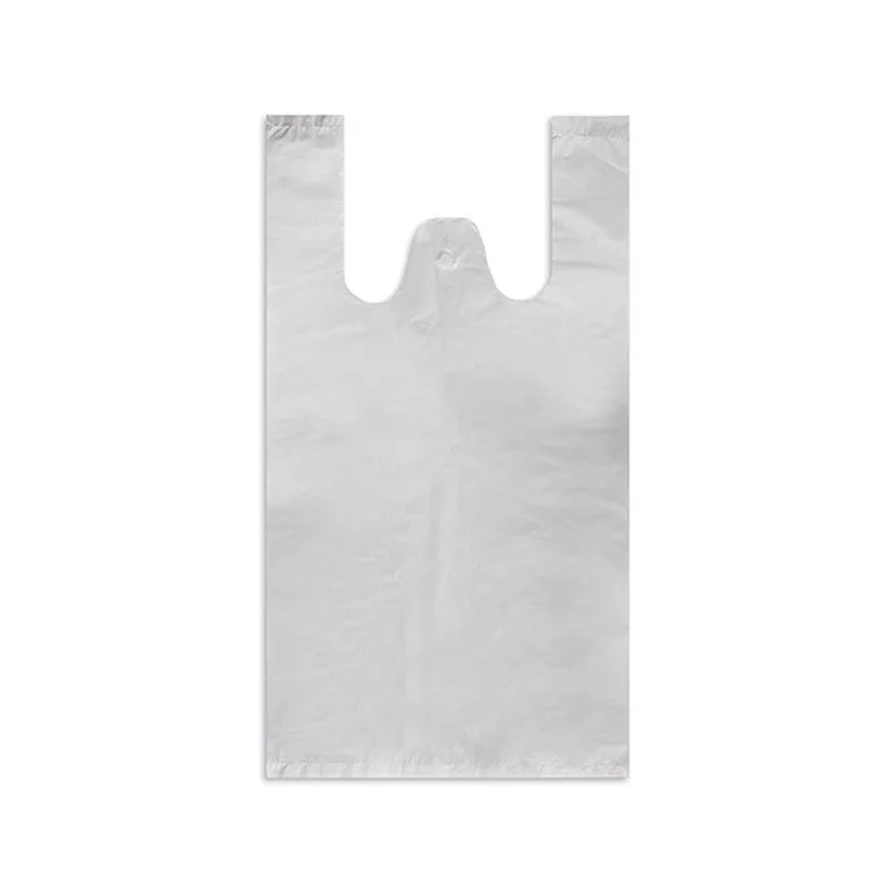
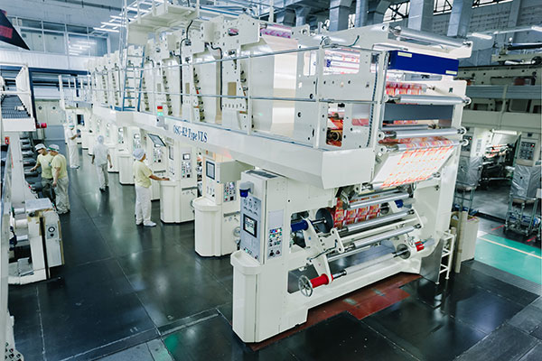

↗
↗Shopping & Carrier Bags
Carrier bags for supermarkets, retail stores and everyday shopping.
PLASTIC BAG MANUFACTURER
Plastic bags for retail, food, pet care and industrial use. Custom sizes, materials and printing for bulk orders.
Factory directDirect manufacturer supply
Made to your briefSizes, materials & printing
Free samplesTry before you order
International deliveryOptions agreed for your order
PRODUCTS
No matching bag types. Try another search.
Images show reference formats. Materials, sizes and printing are confirmed for your order.
CUSTOM OPTIONS
Start with the product you need to pack. We’ll help you work through the format, material and print — all the way to a packaging brief that works for your business.
Discuss a custom order
Custom Shopping Bags
FORMAT REFERENCE
Industry reference · FILM MASTER · Not our facilityCOMPANY
SKYEVER Packaging provides custom plastic bags for supermarkets, brands and industrial businesses. Our manufacturing experience dates back to 2002, with sizes, materials and printing tailored to your needs.


Our range includes supermarket and retail bags, industrial packaging, garbage bags, pet waste bags, pouches and printed films. Share your application so we can confirm the right format.
We offer custom printing and plate-making support. Send your artwork and packaging requirements so we can confirm the available options for your product.
No minimum order quantity. Small orders are welcome. Share your bag specifications and preferred quantity for a tailored quote.
Yes. We’ll send you free samples to assess the material and quality. Try them with your products first; if they suit your needs, we can discuss customization and your order.
Material options can be discussed for your application. Degradation conditions and any required documentation must be confirmed for the selected material and target market.
Production timing and international shipping are agreed after the specifications, quantity and destination are clear. Include your required arrival date when you contact us.
CONTACT
Send your bag type, specifications, estimated quantity and delivery destination.